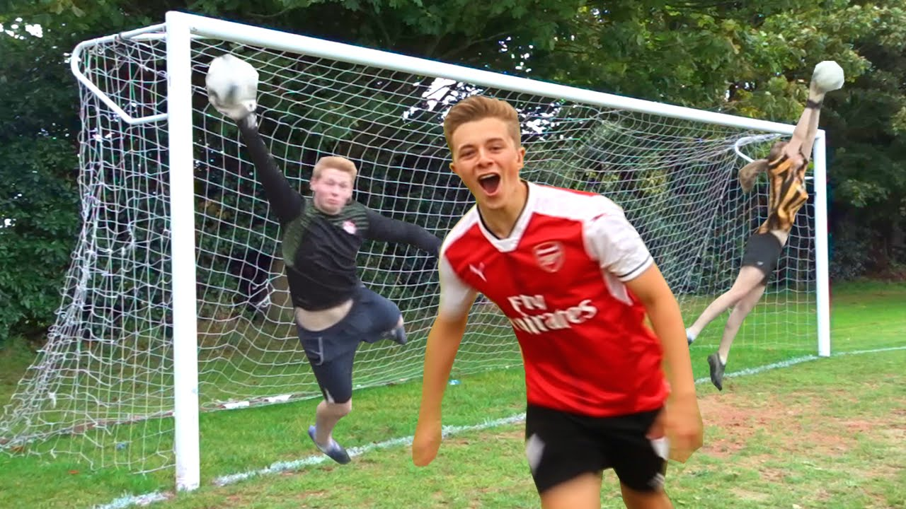

Channels:
-
Ryan Trahan
Ryan Trahan is a creative and entertaining YouTuber known for his unique storytelling, humor, and engaging challenges. His channel features a diverse mix of content, including imaginative challenge videos, such as surviving on a single penny or embarking on cross-country journeys, which captivate audiences with their heartwarming and inspiring nature. Alongside these, Ryan shares personal and relatable vlogs that offer funny glimpses into his life, creating a strong connection with his viewers. Many of his videos also focus on meaningful charity projects, seamlessly blending entertainment with raising awareness and funds for important causes.
-
The Burnt Chip
The Burnt Chip is a popular YouTuber known for his humorous and engaging content, primarily focused on gaming and challenges. His channel features a mix of FIFA gameplay, collaborations with other creators, and entertaining challenges that keep viewers hooked. Known for his quick wit and laid-back style, The Burnt Chip has built a strong connection with his audience, making his videos both enjoyable and relatable.Whether it's intense gaming sessions or lighthearted banter, his content is perfect for anyone looking for a mix of fun and laughter.
-
ChrisMD
ChrisMD is a highly entertaining YouTuber known for his incredible football skills, creative challenges, and engaging personality. His channel offers a mix of exciting football videos, including crossbar challenges, trick shots, and match highlights, often featuring collaborations with other popular creators and professional athletes. Chris also shares hilarious and relatable content, blending humor and impressive athleticism to create videos that appeal to both football fans and general audiences. His passion for the game and ability to entertain have made ChrisMD a favorite among viewers seeking a combination of skill, fun, and creativity.